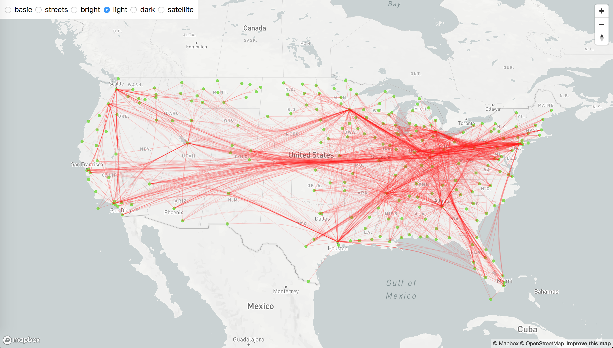
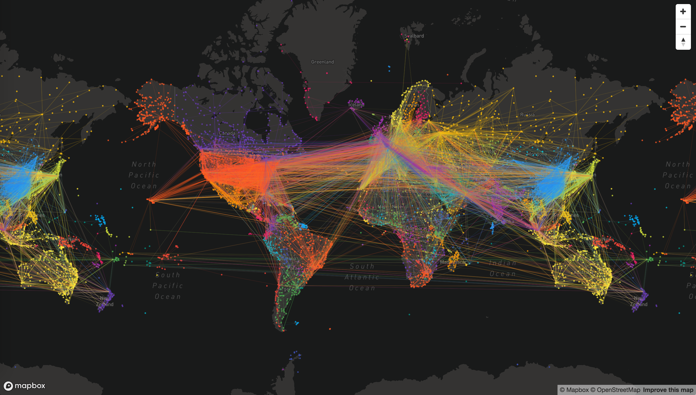

Introduction
VizArt is an open source Javascript library for data visualization. VizArt is written in ES6 and built on top of D3 V4.
Manifest
It’s not just about an efficient technology tool. What we’re looking for in data visualization is artistic expression and beauty.
Coloring
With high-performance color tools such as D3, ColorBrewer, I WantHue and ChromaJS, VizArt takes precise and brilliant coloring as its aim.
Minimal API
The components of VizArt are independent from each other, making it possible to use only one or all of them.
Modularity
The components of VizArt are independent from each other, making it possible to use only one or all of them.
Technology
SVG, Canvas and WebGL come together into high-performance visualizations in a web browser.
ES6
Written in ES6 and built with Rollup, VizArt enables the use of a single chart without the hassle of loading an entire library.
-

- 
- 
About
VizArt is currently maintained by Yun Xing.
VizArt is inspired by the work of Mike Bostock. Some charts are based on open-source projects. Credits are given to
those projects in the demo page.